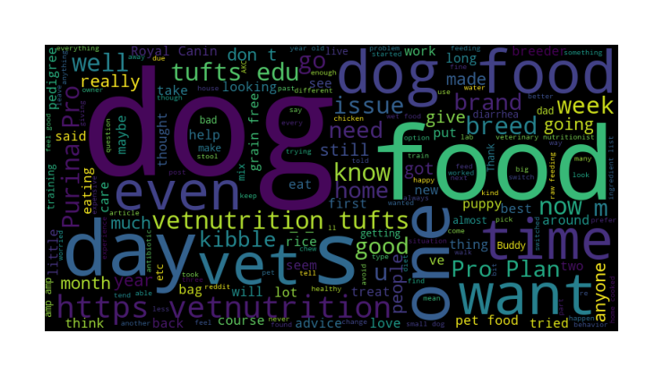
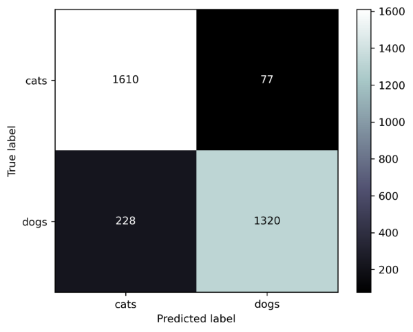

Overview
As a pet owner, have you ever wondered what other pet owners think about the different pet food brands available on the market? Are you curious about the most commonly discussed brands and the overall sentiment around them? Our project aimed to answer these questions by analyzing posts from the r/Cats and r/Dogs subreddits using Natural Language Processing (NLP) techniques. In this executive summary, we will share our key findings and insights that can benefit both pet owners and pet food manufacturers. So, let's dive in and discover what the online pet community has to say about their furry friends' food!
Problem Statement
The goal of this project is to perform sentiment analysis on sentences around each pet food brand mentioned on Reddit. The purpose of this analysis is to gain insights into how users perceive different pet food brands and to identify any common positive or negative sentiments associated with these brands. Additionally, using NlP, several classifier models are trained and compared to predict which subreddit a post came from.
Data
The data for this project was collected using Pushshift's API, and includes posts and comments from two subreddits: /r/cats and /r/Dogs. The data was preprocessed using natural language processing (NLP) techniques, including tokenization, stopword removal, stemming and CountVectorizer.
Methodology
The project utilized Natural Language Processing (NLP) techniques such as TfidfVectorizer, CountVectorizer, and sentiment analysis and several Classifiers to achieve its goals.
First, the project used Pushshift's API to collect posts from both subreddits. Then, it employed CountVectorizer to identify the most common pet food brands mentioned in the posts.
Next, the sentiment analysis was performed using the VADER sentiment analyzer from the NLTK library. For each pet food brand mentioned in the data, the code identifies the sentences that contain the brand name and applies sentiment analysis to each sentence. The sentiment scores for each sentence are then aggregated to give an overall sentiment score for each brand. The project used SentimentIntensityAnalyzer from the Natural Language Toolkit (nltk) to perform sentiment analysis on the posts related to each brand. CountVectorizer and TfidfVectorizer used as transformers and MultinomialNB, RandomForestClassifier, LogisticRegression, LinearSVM and SVM as estimators.
As a final step, Ensembling all models was used to get the best prediction with high accuracy.
Insights
The analysis found that some pet food brands have consistently positive sentiment. For instance:
"I love Blue Buffalo!", "The current recommended food to feed is kibble that follows WSAVA guidelines. These brands are as follows: Purina, Royal Canin, Hill's Science Diet, Eukanuba, and Iams.", "Purina dry food is much lower quality than Tiki cat where the first few ingredients were fish."
While others mostly have negative sentiment. For instance:
"There has been a pet food Recall for Royal Canin!", "I’m honestly about done with the wellness brand. Their customer service is not helpful and always insists they “haven’t changed their formula”, but my cats are very in-tune with their food and any changes that happen with it. They once stopped eating their kibbles flat out and it turns out there was the slightest change to the recipe that shouldn’t have been noticed, but they did.", "I've been feeding Purina Beyond for ages to my 2 cats (The whitefish or salmon) because one of my cats has a sensitive tummy and that doesn't make her barf, and my other cat has a moderate chicken allergy that leaves him itchy. It's about $35 for an 11lb bag right now, but they changed the recipe and added chicken meal to it.", " was feeding him royal canin first but recently found out it has corn , Chicken byproducts , soy and wheat that's really bad for dogs should I still go with royal canin or switch to orijen or acana?"
Some brands also have mixed sentiment, with both positive and negative comments. For example:
"Hill's Science Diet is expensive, but it works well for my dog's health issues.", "instinct (another one they really do not like), Applaws (this one’s hit or miss, but it’s so expensive to be a miss)", "royal canin dermacomfort worsens the skin condition of my dog my dog’s been battling dandruff since last december, mostly below his mouth, chest and paws. my vet recommended changing his diet to royal canin dermacomfort."
These insights could be valuable for pet food companies looking to understand how consumers perceive their brand, as well as for pet owners looking for recommendations on which pet food brands to try.
Results
Also, the results of the final model which is an ensembled model is the accuracy of 0.91 for test data and 0.95 for train data. In this project, both false positives and false negatives are equally important and should be minimized. So, the accuracy score was considered as the metric to evaluate the classifier. Here is the confsudion matrix for the final model:
